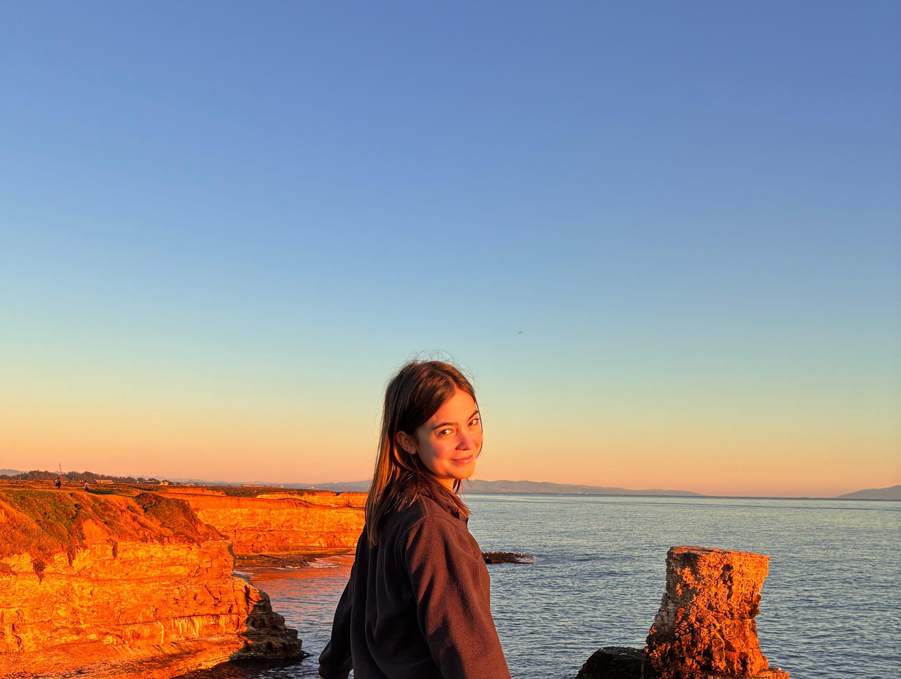

Understanding our planet through spatial data.

I work at the intersection of environmental science, geospatial analysis, and data science. I use GIS, remote sensing, statistical modeling, and programming to investigate environmental change and transform complex spatial data into reproducible insights and accessible visualizations.
Selected Projects
A selection of research and applied projects exploring environmental change, spatial patterns, and geospatial data workflows.
01 / GEOSPATIAL DATA ENGINEERING
Wildfire Resilience Data Package
The project provides programmatic access to 82 wildfire resilience raster layers, with metadata discovery and spatial data retrieval.
02 / WILDFIRE & ENVIRONMENTAL JUSTICE
Eaton and Palisades Fires Analysis
The analysis combines fire-related imagery and environmental justice indicators to examine the geographic and social dimensions of wildfire impacts.
03 / BIODIVERSITY & REMOTE SENSING
Biodiversity Intactness in Phoenix, Arizona
A spatial assessment of changes in biodiversity intactness across Phoenix, Arizona, using raster data from Microsoft Planetary Computer.
04 / MARINE SPATIAL ANALYSIS
Prioritizing Potential Aquaculture Areas
A geospatial suitability analysis integrating raster and vector datasets to identify potential areas for aquaculture.
05 / EXTREME WEATHER & SOCIOECONOMIC IMPACTS
Identifying the Impacts of Extreme Weather
A spatial analysis of the February 2021 power outages in Houston. The project combines satellite nighttime lights, road networks, building data, and socioeconomic indicators to investigate the geographic distribution of impacts.
06 / LAND-COVER CHANGE & STATISTICAL MODELING
Analyzing Deforestation Drivers in MATOPIBA
The project applies statistical modeling to investigate relationships between vegetation loss and human activities using MapBiomas data.
Visualization & Communication:
Interactive ArcGIS Map - Houston Winter Storm Blackouts
An interactive application part of a geospatial data science project investigating the socioeconomic impacts of the February 2021 Texas winter storm blackouts in Houston.
ArcGIS StoryMap - Wildfire Resilience Index Data Package
How firex was built. Follow the journey from a 25 GB wildfire-resilience archive to a lightweight R interface for retrieving only the spatial data a user needs.
Comparing Mining Activity Across Brazil’s Largest Biomes
This project uses MapBiomas time-series data to explore the spatial and temporal patterns of mining expansion across Brazil’s largest biomes.
Publication
Detection of Changes in Land Use and Land Cover in AMACRO and MATOPIBA
More Experience
Master of Environmental Data Science
Bren School of Environmental Science & Management, University of California, Santa Barbara
Bachelor of Environmental Science
University of Brasília, Brazil
Temporary Environmental Agent
Chico Mendes Institute for Biodiversity Conservation (ICMBio)
January 2024 – July 2025 | Brasília, Brazil
Environmental GIS Intern
Chico Mendes Institute for Biodiversity Conservation (ICMBio)
June 2023 – December 2023 | Brasília, Brazil
Environmental Research Intern
Institute of Research and Statistics of the Federal District (IPEDF)
March 2023 – May 2023 | Brasília, Brazil
Wildfire Resilience Data Package
Master’s Capstone | National Center for Ecological Analysis and Synthesis
Detection of Changes in Land Use and Land Cover in AMACRO and MATOPIBA
Undergraduate research | Revista Brasileira de Geomática
Analysis of Satellite-Derived Rainfall Data in Watersheds of the Cerrado Biome
Scientific Initiation Research Fellowship | University of Brasília
Scientific Initiation Congress
Let’s Connect
I’m interested in opportunities involving environmental data science, geospatial analysis, remote sensing, and reproducible data workflows.